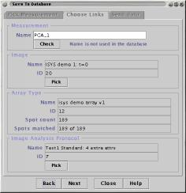

Note: this help page is incomplete.
Store a Measurement in a maxdSQL database
See the maxdSQL and maxdLoad documentation for full details about building and populating a maxdSQL database.
When this plugin is started, the Database Connection panel will be displayed. Use this panel to login to a maxdSQL database.

(In the following steps the names of maxdSQL objects are written like this.)
The selected Image identifies a single ArrayType. Details of this ArrayType will be shown in the "Array Type" panel once an Image has been selected. The ArrayType determines the collection of Spots in the database that can be matched to Spots in the Measurments.
All of the Spot Names in the Measurement must be matched with the Spot Names on the selected ArrayType. (Not all of the Spots on the ArrayType have to be supplied, so subsets of the ArrayType can be saved.)
If the Measurement was previously loaded from a maxdSQL database it will have attributes that identify which Image it is linked with. These attributes will be detected by the Save To Database plugin.
Press the "Pick" button on the "Image Analysis Protocol" panel and choose one protocol from the list that will be displayed.
The selected ImageAnalysisProtocol determines which Spot Attributes can be saved along with the Measurement.
Note: this help page is incomplete.